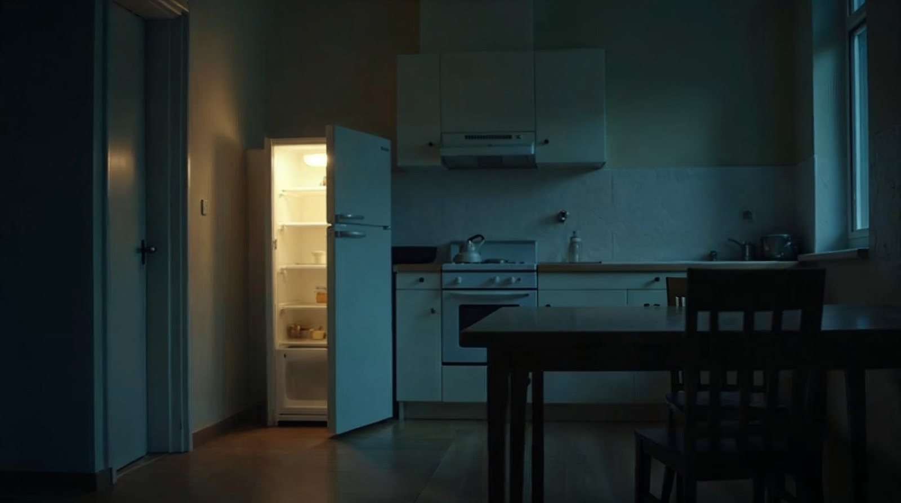
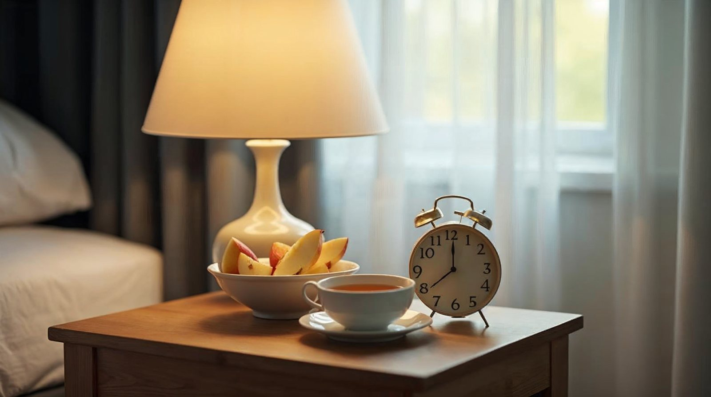
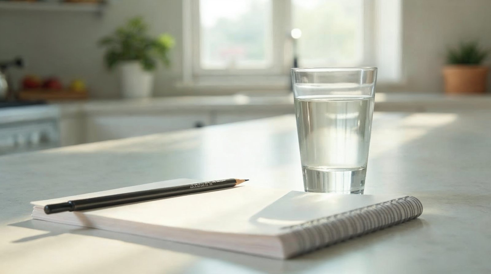
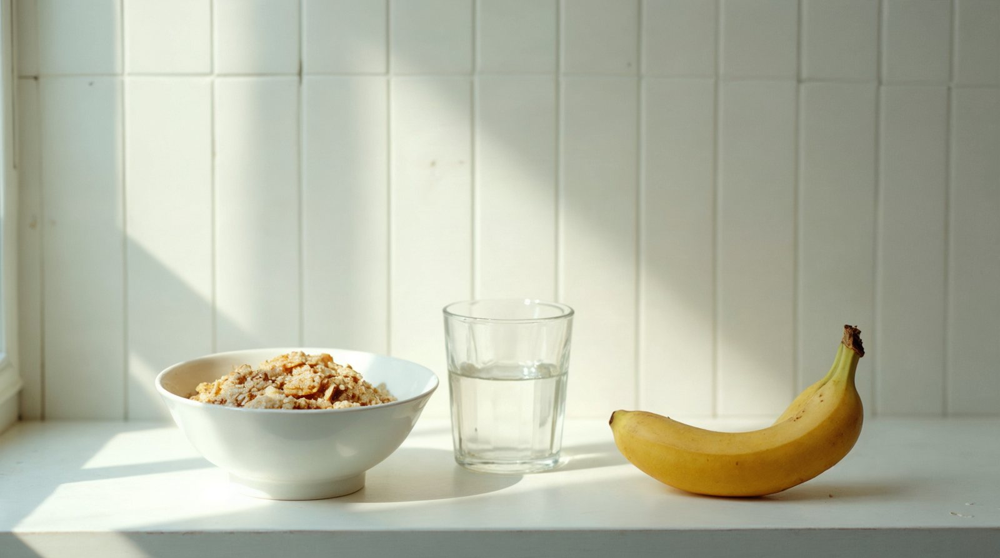
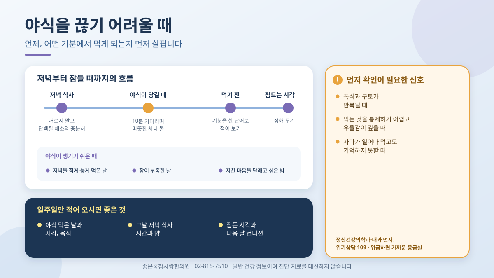

이종호 한의사 감수좋은꿈참사랑한의원 대표원장 (한의사 면허번호 19769)발행 2026-11-22 · 수정 2026-11-27
이 글의 차례
밤 11시, 하루 일을 다 끝내고 겨우 소파에 앉았습니다. 텔레비전을 켜 놓고 휴대폰을 넘기다 보면 어느새 배달 앱을 열어 보고 있죠. "오늘만 먹자." 그렇게 시킨 떡볶이를 반쯤 먹고 나면 배는 부른데 마음 한쪽이 무거워요.
또 먹었구나, 내일은 진짜 안 먹어야지. 그리고 다음 날 밤, 비슷한 시간에 같은 생각을 또 하게 됩니다.
진료실에서 이런 말씀을 자주 들어요. "원장님, 제가 의지가 너무 약한가 봐요." 고개를 푹 숙이고 하시는 말씀이라 듣는 저도 마음이 쓰여요. 그런데 저는 그 말에 "네"라고 대답하지 않아요.
의지가 없는 게 아니라 원래 그런 거예요. 얘기를 들어 보면, 하루가 그렇게 흘러가도록 짜여 있는 경우가 훨씬 많거든요. 배가 고파서 먹는 것과 힘내려고 '먹어 주는' 건 다른 얘기예요. 밤 11시의 떡볶이는 대개 뒤쪽이죠. 배보다 지친 하루가 먼저 손을 내미는 거예요.
그러니 먼저 이 말씀부터 드리고 싶어요. 야식을 드셨다고 해서 잘못 사신 게 아니에요. 늦게까지 일하고, 누군가를 챙기고, 버티느라 애쓰신 하루 끝에 무언가로 자신을 달래고 싶은 마음은 지극히 사람다운 마음이에요.
그동안 그 밤마다 혼자 먹고 혼자 자책하셨을 걸 생각하면, 그게 더 힘드셨겠다 싶어요.
왜 밤에 유독 먹고 싶어질까요
야식이 생기는 길은 생각보다 여러 갈래입니다. 저는 크게 몇 가지로 나눠서 들어 봅니다.
가장 흔한 건 낮 동안 덜 먹은 몫이 밤에 한꺼번에 몰려오는 경우입니다. 아침은 거르고, 점심은 바빠서 대충 넘기고, 저녁은 늦거나 적게 먹습니다. 살을 빼려고 일부러 저녁을 줄이시는 분도 많지요. 그러면 몸은 하루 종일 모자랐던 걸 밤에 채우려고 듭니다. 이건 의지가 약해서가 아니라 몸이 하는 아주 자연스러운 반응에 가깝습니다.
두 번째는 잠입니다. 잠이 부족하면 식욕이 커지고 단 음식이나 기름진 음식이 더 당기는 경향이 있는 것으로 알려져 있습니다. 늦게 자는 날일수록 깨어 있는 시간이 길어지고, 깨어 있는 시간이 길수록 먹을 기회도 늘어납니다. 잠을 설친 다음 날 하루 종일 군것질이 당기셨던 경험, 한 번쯤 있으실 겁니다.
세 번째는 마음의 허기입니다. 배가 고파서라기보다 하루의 긴장을 내려놓는 의식처럼 먹게 되는 경우입니다. 퇴근하고 문을 닫는 순간, 아이를 재우고 거실 불을 끄는 순간, 그제야 비로소 '내 시간'이 시작되지요. 그 시간을 채워 주는 가장 손쉬운 게 음식인 겁니다.
그럼 지금 느끼는 게 진짜 배고픔인지 어떻게 구분할까요? 제가 자주 드리는 기준은 이렇습니다. 진짜 허기는 서서히 오고, 밥이든 고구마든 웬만한 음식이면 다 괜찮게 느껴지며, 배가 차면 멈출 수 있습니다. 반면 마음의 허기는 갑자기 오고, 꼭 그 음식이어야 하며, 배가 불러도 손이 계속 갑니다.
먹고 나서 속보다 마음이 더 불편하다면 마음의 허기였을 가능성이 큽니다. 어느 쪽이 맞고 틀린 게 아니라, 어느 쪽인지 알아야 다음 방법이 달라진다는 이야기입니다.
물론 두 가지가 섞여 있는 날도 많습니다. 저녁을 제대로 못 먹어 배도 고픈데, 하루 종일 쌓인 서운함까지 겹친 밤이지요. 그런 날은 '나는 왜 이럴까'보다 '오늘은 배도 마음도 비어 있었구나' 하고 한번 알아봐 주시는 것만으로도 충분합니다. 그렇게 알아차리는 연습이 쌓이면, 같은 밤이 와도 손이 가기 전에 잠깐 멈출 틈이 조금씩 생깁니다.
이런 분들이 많습니다
진료실에서 만나는 분들을 떠올려 보면 몇 가지 모습이 겹칩니다. 특정한 누군가가 아니라, 여러 분께 비슷하게 듣는 이야기입니다.
퇴근이 늦은 직장인들이 많습니다. 저녁 8시가 넘어서야 편의점 김밥 한 줄로 저녁을 때우고, 집에 와서 씻고 나면 11시쯤 라면 생각이 간절해집니다.
이런 분께는 야식을 참는 법보다 퇴근 전 오후 4~5시쯤 삶은 달걀이나 우유, 견과류 한 줌처럼 간단한 걸 미리 드셔서 저녁까지의 허기를 덜어 두는 방법을 먼저 말씀드립니다. 저녁을 조금 더 든든하게 드시는 것도 함께요.
아이를 재우고 난 뒤 밤 10시 넘어서 과자 봉지를 여는 분들도 많습니다. 하루 종일 누군가를 위해 움직이다가 그제야 처음 앉는 시간이니까요. 이분들께 필요한 건 배를 채우는 것보다 '하루를 마무리하는 시간'인 경우가 많았습니다. 그래서 따뜻한 차 한 잔, 좋아하는 음악, 짧은 샤워처럼 먹는 것 말고 그 시간을 채울 무언가를 함께 찾아봅니다.
밤늦게까지 공부하는 수험생과 그 부모님도 자주 오십니다. 이 경우엔 야식을 아예 끊으라고 하기 어렵습니다. 대신 먹는 시간과 종류를 정하고, 잠드는 시각을 먼저 고정해 보자고 말씀드립니다.
교대 근무를 하시는 분들도 있습니다. 남들이 자는 시간에 일해야 하니 '야식'이라는 말 자체가 맞지 않지요. 이런 분께는 시계 기준이 아니라 본인의 잠 기준으로 식사 순서를 다시 짜 보는 이야기를 합니다. 일어나서 첫 끼, 일하는 중간 한 끼, 자기 두세 시간 전 마지막 끼니처럼요.

이런 밤도 있습니다
앞에서 말씀드린 모습 말고도, 진료실에서 이야기를 듣다 보면 야식이 찾아오는 밤의 얼굴은 참 여러 가지입니다.
혼자 사는 작은 방에서 맥주 한 캔을 따는 밤이 있습니다. 처음에는 한 캔만 마시려고 했는데, 술이 들어가니 안주가 필요하고, 안주를 먹다 보니 한 캔이 더 필요해집니다.
술은 입맛을 돋우고 멈추는 힘을 느슨하게 만들기 쉬워서, 술 마신 날 야식이 더 커졌다는 분이 많습니다. 이런 분께는 술을 마시는 날을 정해 두고, 마시는 날에는 안주를 처음부터 그릇 하나에 덜어 두시라고 말씀드립니다.
주말 밤, 미뤄 둔 드라마를 몰아서 보는 날도 있습니다. 한 회만 보려다 다음 회가 자동으로 시작되고, 손은 습관처럼 과자 봉지를 찾습니다. 화면에 마음을 빼앗기면 얼마나 먹었는지 모른 채 봉지 바닥을 만나게 되지요. 보는 것은 즐기시되, 먹을 것은 처음에 정한 만큼만 접시에 담아 두고 봉지는 부엌에 두고 오시라고 권합니다.
이직이나 이사, 새 학기처럼 생활이 바뀐 시기에 야식이 늘었다는 분도 많습니다. 낯선 곳에서 하루 종일 긴장하다 집에 돌아오면 그제야 몸이 풀리면서 무언가 먹고 싶어집니다. 이런 시기에는 야식만 따로 떼어 보기보다, 요즘 내가 얼마나 애쓰고 있는지 먼저 알아봐 주는 것이 순서라고 생각합니다.
밤늦게 일을 마치는 분들도 있습니다. 대리운전이나 야간 근무를 마치고 새벽 한두 시에 국밥 한 그릇을 드시고 바로 주무시는 분들입니다. 이분들께 그 한 그릇은 야식이 아니라 그날의 저녁입니다.
그래서 저는 이 경우 끊는 이야기보다, 일을 시작하기 전에 제대로 된 한 끼를 먼저 드시고 일을 마친 뒤에는 국물보다 건더기 위주로 양을 조금 줄여 보자는 이야기를 합니다.
먼저 이렇게 여쭙니다
야식 이야기로 오시면 저는 대략 이런 것들을 여쭙니다.
- 야식은 몇 시쯤, 어떤 음식으로, 얼마나 드시는지
- 그때 배가 정말 고픈지, 아니면 입이 심심하거나 마음이 허전한지
- 저녁은 몇 시에 얼마나 드시는지
- 잠드는 시각과 수면 시간은 어떤지
- 야식을 드신 다음 날 아침 속은 어떤지
그리고 꼭 하나 더 여쭙는 게 있습니다. "야식을 안 드신 날은 어떤 날이었어요?" 이 질문에 대한 대답 속에 실마리가 숨어 있는 경우가 많습니다. 일찍 잔 날이었는지, 저녁을 든든히 먹은 날이었는지, 누군가와 이야기를 많이 나눈 날이었는지. 안 먹은 날을 들여다보면 그분에게 맞는 방법이 조금씩 보입니다.

오늘 밤부터 해 볼 수 있는 것
한꺼번에 다 바꾸려고 하면 사흘 만에 지칩니다. 그래서 저는 하루 흐름을 따라 작은 것부터 말씀드립니다.
낮에는 끼니를 너무 거르지 않는 것이 시작입니다. 아침이 어렵다면 우유 한 잔이라도 좋습니다. 점심은 가능하면 단백질 반찬을 하나 챙기세요. 그리고 오후 4~5시쯤, 저녁까지 시간이 많이 남았다면 간단한 간식을 미리 드셔 두세요. 저녁 허기를 미리 조금 덜어 두는 겁니다.
저녁은 굶지 말고, 가능하면 잠들기 서너 시간 전에 단백질과 채소를 포함해 충분히 드세요. 저녁을 줄이는 게 야식을 줄이는 길처럼 보이지만, 실제로는 밤의 허기를 더 키우는 경우가 많습니다.
밤에 무언가 당기기 시작하면 바로 일어나지 말고 10분만 기다려 보세요. 그 사이 따뜻한 차나 물을 한 잔 마셔 봅니다. 10분 뒤에도 여전히 배가 고프다면 진짜 허기일 수 있으니, 그땐 가볍게 드셔도 괜찮습니다.
양치를 먼저 해 두는 것도 '오늘 먹는 시간은 여기까지'라는 신호가 되어 줍니다. 배달 앱 알림을 꺼 두고, 집에 간식을 상자째 쌓아 두지 않는 것도 생각보다 큰 차이를 만듭니다.
저녁 여덟 시쯤 퇴근해서 자정 무렵 잠드는 분을 예로 하루를 시각으로 적어 보면 이렇습니다. 생활 시간이 다르시면 잠드는 시각을 기준으로 앞뒤로 옮겨 쓰시면 됩니다.
- 07:30 우유 한 잔이나 바나나 하나라도 아침 챙기기
- 12:30 점심에 단백질 반찬 하나 꼭 넣기
- 16:00~17:00 삶은 달걀, 두유, 견과류 한 줌처럼 간단한 간식
- 20:00~20:30 저녁은 거르지 말고 밥·단백질·채소를 갖춰 먹기
- 21:30 양치하기. "오늘 먹는 시간은 여기까지"라는 신호
- 22:00 무언가 당기면 따뜻한 차 한 잔 마시고 십 분 기다리기
- 22:30 휴대폰은 충전기에, 배달 앱 알림은 꺼 두기
- 23:30~24:00 매일 비슷한 시각에 눕기
이 순서를 하루아침에 다 지키실 필요는 없습니다. 저는 보통 두 주를 이렇게 나누어 보시자고 말씀드립니다.
- 첫 주: 오후 간식과 저녁 거르지 않기, 이 두 가지만
- 둘째 주: 밤 양치 시각과 눕는 시각 정하기를 더하기
- 두 주 뒤: 야식을 먹은 밤과 안 먹은 밤의 차이를 기록에서 찾아보기
그래도 드시게 된다면, 그건 그것대로 괜찮습니다. 다만 봉지째 들고 서서 먹기보다 그릇에 덜어 식탁에 앉아 천천히 드셔 보세요. 그리고 먹자마자 눕기보다는 조금 시간을 두고 가볍게 움직인 뒤 잠자리에 드시는 편이 속이 편합니다.
마지막으로 잠드는 시각을 정해 보세요. 일찍 자라는 말이 아니라, 매일 비슷한 시각에 눕는 것이 먼저입니다. 깨어 있는 밤이 줄면 먹을 기회도 자연히 줄어듭니다.
그래도 먹고 싶은 밤이라면
솔직히 말씀드리면, 야식이 당기는 모든 밤을 참아 내기는 어렵습니다. 저도 진료를 늦게 마친 날이면 집에 가는 길에 따뜻한 국물이 생각납니다. 그래서 저는 "절대 드시지 마세요"보다 "드신다면 이렇게 해 보세요"라는 이야기를 더 자주 드립니다.
먼저 시간을 조금 당겨 보세요. 같은 음식이라도 자정 무렵보다 잠들기 두세 시간 전에 드시는 편이 속이 덜 무겁습니다. 다음은 양입니다. 라면 한 봉지를 끓인다면 반 봉지만 끓이고, 남은 허기는 따뜻한 두유나 우유 한 잔으로 달래 보는 식입니다.
종류도 조금씩 바꿔 볼 수 있습니다. 맵고 짜고 기름진 음식은 다음 날 아침 얼굴이 붓고 속이 더부룩하다는 분이 많아서, 삶은 달걀이나 두부처럼 담백한 것을 집에 미리 준비해 두시길 권합니다. 배달 음식이 익숙하신 분이라면 주문 전에 물 한 잔을 먼저 마시고, 그래도 시키고 싶으면 그때 시키자고 스스로와 약속해 보세요.
혼자 사는 분과 가족과 함께 사는 분은 사정이 또 다릅니다. 식구 중 누군가 밤마다 야식을 드시면 나만 참기가 정말 어렵지요. 그럴 땐 혼자 애쓰기보다 가족과 '야식 없는 요일'을 한두 날만 정해 보시는 것도 방법입니다.
주말 밤처럼 유독 무너지는 날이 있다면, 그날은 처음부터 무엇을 얼마나 먹을지 정해 두고 즐겁게 드시는 편이 오히려 마음이 편할 수 있습니다. 계획한 야식은 실패가 아닙니다.
야식이 밤과 다음 날 아침에 남기는 것
야식을 먹은 다음 날 아침을 떠올려 보세요. 진료실에서 많이 듣는 말은 "입맛이 없어요"입니다. 밤에 먹은 음식이 아직 다 내려가지 않은 느낌이라 아침을 거르게 되고, 아침을 거르면 점심이 늦어지거나 많아지고, 그러다 저녁이 흐트러지면 다시 밤에 허기가 찾아옵니다. 야식이 하루의 리듬을 한 칸씩 밀어내는 셈입니다.
잠에도 흔적이 남는다고 말씀하시는 분이 많습니다. 배가 부른 채로 누우면 속이 더부룩하거나 신물이 올라와 뒤척이게 되고, 맵고 짠 음식을 먹은 날은 밤중에 목이 말라 깨기도 합니다. 아침에 얼굴이나 손이 붓는다는 분, 개운하지 않고 몸이 무겁다는 분도 계십니다. 이런 날이 이어지면 낮에 피곤하고, 피곤하면 다시 밤에 무언가 당깁니다.
저는 이 고리를 끊으려면 어디서든 한 군데부터 바꿔 보시면 된다고 말씀드립니다. 야식을 줄이기 어려우면 아침 한 끼를 먼저 챙겨 보셔도 되고, 아침이 어려우면 눕는 시각을 먼저 정해 보셔도 됩니다. 한 칸이 제자리로 돌아오면 다른 칸도 조금씩 따라오는 경우가 많습니다.

기록은 반성문이 아닙니다
식사 기록을 권하면 많은 분이 부담스러워하십니다. 먹은 걸 적는 게 꼭 반성문 같다고들 하세요. 그래서 저는 조금 다르게 적어 보시라고 말씀드립니다.
무엇을 먹었는지보다 먹기 직전 기분을 한 단어로 적는 겁니다. '피곤', '심심', '속상', '배고픔'. 이 한 단어가 일주일쯤 쌓이면 나도 몰랐던 패턴이 보입니다. 월요일 밤에 유독 많다든지, 회의가 많은 날 늘어난다든지요.
일주일, 가능하면 2주 정도 적어 보면 충분합니다. 야식을 먹은 날과 시각, 음식, 그날 저녁 식사 시간과 양, 먹기 전 기분, 잠든 시각과 다음 날 아침 컨디션 정도면 됩니다. 야식을 참은 날에는 그날 무엇이 도움이 됐는지도 한 줄 적어 주세요. 그 한 줄이 다음 상담에서 가장 귀한 자료가 됩니다.
함께 사는 가족이 도울 수 있는 것
야식은 집 안의 분위기와도 이어져 있습니다. 식구 중 한 사람이 야식을 줄여 보려 할 때, 다른 식구가 밤마다 그 앞에서 치킨을 시키면 아무리 마음을 먹어도 버티기 어렵습니다. 그렇다고 가족 모두가 참아야 한다는 이야기는 아닙니다. 먹을 때는 다른 방이나 식탁에서 먹고, 남은 음식은 바로 냉장고에 넣어 눈에 띄지 않게 해 주는 것만으로도 큰 도움이 됩니다.
그리고 "또 먹어?"라는 말은 아껴 주세요. 걱정에서 나온 말이라도 듣는 사람에게는 자책을 하나 더 얹는 말이 되기 쉽습니다. 대신 저녁을 함께 제때 먹고, 밤에 따뜻한 차를 한 잔씩 나눠 마시는 집이 되면 그 시간이 야식을 대신해 주기도 합니다.
언제까지 지켜보고, 언제 진료를 받으면 좋을까요
저녁 시간과 잠드는 시각을 바꾸셨다면 2~3주는 지켜봐 주세요. 처음 며칠은 오히려 허기가 더 크게 느껴질 수 있는데, 몸이 새 리듬에 익숙해지는 시간이 필요해서입니다. 그 사이 한두 번 드셨다고 다 무너진 게 아닙니다. 다음 날 다시 이어 가시면 됩니다.
다만 기다리지 말고 먼저 진료를 받으셔야 하는 경우도 있습니다. 야식이 생활 습관만의 문제가 아니라 몸이나 마음이 보내는 신호일 때인데, 바로 아래에 정리해 두었습니다.
이런 증상은 먼저 확인이 필요합니다
- 밤에 먹고 난 뒤 명치나 윗배가 심하게 아프고 등까지 뻗치는 경우, 피를 토하거나 커피 찌꺼기 같은 것을 토하는 경우에는 가까운 응급실로 가세요.
- 먹은 뒤 가슴이 조이듯 아프면서 식은땀이나 숨참이 함께 있다면 체한 것으로 넘기지 마시고 가까운 응급실로 가세요.
이런 신호가 있으면 한의원보다 가까운 병원이나 응급실을 먼저 찾으세요.
야식은 대부분 생활 리듬을 살피며 천천히 다듬어 갈 수 있지만, 아래와 같은 경우에는 생활 조정보다 확인이 먼저입니다.
처음 오시면 이렇게 진료합니다
좋은꿈참사랑한의원에 처음 오시면 저는 모든 분의 맥을 먼저 짚고, 야식을 먹게 되는 하루의 흐름을 차분히 듣습니다. 몇 시에 일어나 몇 시에 무엇을 드시는지, 언제 가장 지치는지를 시간 순서대로 따라가 봅니다.
양쪽 손목에서 맥을 짚는 동안에는 잠은 어떤지, 잠드는 데 오래 걸리는지 자주 깨는지, 식사 뒤 속이 더부룩하거나 신물이 올라오지는 않는지, 대변은 편한지, 손발이 찬 편인지 몸에 열이 많은 편인지 여쭙니다.
야식 이야기를 하러 왔는데 왜 이런 걸 묻나 싶으실 수 있습니다. 그런데 소화가 늘 무거운 분과 속은 편한데 잠이 얕은 분은 같은 야식이라도 생기는 길이 다르더군요. 필요하다고 판단되면 혀를 보거나 배를 살펴보기도 합니다.
체중 관리가 함께 필요하시면 인바디 770으로 체성분을 기록해 둡니다. 그 뒤 식사 시간 조정 같은 생활 계획을 함께 세우고, 상태에 맞춰 침이나 한약 상담을 이어 갑니다. 진료를 마칠 때는 다음까지 지켜보실 점을 한두 가지만 말씀드립니다. 열 가지를 한꺼번에 드리면 하나도 지키기 어렵다는 걸 저도 잘 압니다.

오늘 밤 또 드셨더라도
혹시 이 글을 읽는 지금도 야식을 드신 직후라면, 괜찮아요. 자책은 내려놓으셔도 돼요. 자책은 생각보다 다음 날 밤의 야식을 부르는 경우가 많거든요. 오늘은 그냥 따뜻한 물 한 잔 드시고, 조금 쉬었다가 주무세요.
내일 아침은 거르지 말고 가볍게라도 챙겨 드시면서 하루를 다시 시작하시면 돼요. 식욕과의 싸움은 하루 만에 끝나는 게 아니라 계속 가는 거예요. 한 번 졌다고 끝난 게 아니죠.
몸을 살피고 방법을 찾는 건 제가 할게요. 부탁드릴 건 하나뿐이에요. 배달 앱을 열기 전에 "지금 배가 고픈가, 지친 건가" 한 번만 스스로 물어봐 주세요. 묻고 나서도 드시겠다면 그건 그대로 괜찮아요. 묻는 것 하나면 충분해요.
진료실에서 뵈면 저는 "또 드셨어요?"라고 묻지 않을 거예요. 대신 "지난주에 야식 안 드신 날이 있었죠. 그날은 어떤 날이었어요?" 하고 여쭤 보려고요. 그 대답에서 같이 다음 걸음을 찾아보겠습니다.
밤마다 같은 자리에서 같은 고민을 하고 계신다면, 상도역 근처 좋은꿈참사랑한의원에서 하루의 흐름을 함께 펼쳐 보셨으면 해요. 상도동에 사시는 분도, 노량진에서 늦게까지 공부하거나 일하시는 분도, 동작구 다른 동네에서 퇴근길에 들르시는 분도 계세요.
야식 얘기는 부끄러운 얘기가 아니니 편하게 꺼내 주세요.
함께 읽으면 좋은 글
- 진짜 배고픔과 가짜 허기는 어떻게 구분해서 살피나요?
- 폭식 충동이 올 때는 어떤 점을 먼저 살펴보나요?
- 저녁 식사와 술은 잠에 어떤 영향을 주나요?
- 잠을 못 자면 다음 날 왜 더 배가 고픈가요?
- 야식 대신 배가 고플 때 먹을 수 있는 것은 무엇인가요?

여쭙는 것
- 야식은 몇 시쯤, 어떤 음식으로, 얼마나 드시는지
- 그때 배가 정말 고픈지, 아니면 입이 심심하거나 마음이 허전한지
- 저녁은 몇 시에 얼마나 드시는지
먼저 확인이 필요한 신호
- 밤에 먹고 난 뒤 명치나 윗배가 심하게 아프고 등까지 뻗치는 경우, 피를 토하거나…
- 먹은 뒤 가슴이 조이듯 아프면서 식은땀이나 숨참이 함께 있다면 체한 것으로 넘기지…
자주 묻는 질문
야식은 한 번에 완전히 끊어야 하나요?
양과 시간, 음식의 종류를 함께 보고 현실적으로 줄이는 방법을 정합니다. 한 번에 끊기보다 일주일에 하루씩 횟수를 줄여 가는 것부터 시작해도 됩니다.
저녁을 굶으면 야식이 줄지 않을까요?
오히려 밤의 허기가 커지는 경우가 많습니다. 잠들기 서너 시간 전에 저녁을 제때 충분히 드시는 것부터 살펴봅니다.
야식 때문에 잠이 얕은 것 같아요.
늦은 식사는 속을 불편하게 해 잠을 얕게 할 수 있어, 저녁 시간과 잠자리 준비, 소화 상태를 함께 살핍니다.
야식을 먹은 날은 바로 누워도 되나요?
먹자마자 누우면 속이 불편하고 잠이 얕아질 수 있어, 가능하면 조금 시간을 두고 가볍게 움직인 뒤 눕는 편을 권합니다.
야식 상담인데 왜 진맥을 하고 잠과 소화를 묻나요?
소화가 늘 무거운지, 잠이 얕은지, 몸이 찬 편인지에 따라 야식이 생기는 길이 다를 수 있어 양손 맥을 짚으며 하루의 리듬을 함께 여쭙습니다.
야식으로 과일은 괜찮지 않나요?
과일도 양이 많으면 속이 불편하거나 잠이 얕다는 분이 있습니다. 드신다면 작은 그릇에 조금만 덜어 잠들기 두세 시간 전에 드셔 보시고, 다음 날 아침 속이 어땠는지 기록해 보세요.
배가 고파서 잠이 안 오면 어떻게 하나요?
따뜻한 우유나 두유 한 잔처럼 가벼운 것으로 허기만 달래고 주무셔도 괜찮습니다. 이런 밤이 잦다면 저녁 식사 시간과 양을 먼저 함께 살펴봅니다.
교대 근무라 밤에 먹을 수밖에 없어요.
시계보다 내 잠을 기준으로 식사 순서를 짜 봅니다. 일어나서 첫 끼, 일하는 중간 한 끼, 자기 두세 시간 전 마지막 끼니처럼 나누고, 잠들기 직전에는 무거운 음식을 피해 보세요.
좋은꿈참사랑한의원은 재진 때 지난번 이야기부터 이어서 여쭙니다. 진료시간과 예약은 오시는 길에서 확인하세요.
어디서 상담받을 수 있나요?
좋은꿈참사랑한의원은 서울 동작구 만양로2길 2 신성빌딩 3층·5층(서울 동작구 상도동, 7호선 상도역 3번 출구 근처)에 있습니다. 한의사 3명(이종호 대표원장, 조영기 수석진료원장, 정원영 진료원장)이 진료합니다. 진료시간은 평일 09:30~20:00(점심 13:00~14:00), 토·일·공휴일 09:30~15:00이며, 방문 전 전화로 확인을 권합니다. 예약은 네이버 예약, 카카오톡 상담, 전화 02-815-7510로 받습니다.
이 글은 일반적인 건강 정보이며 개인의 진단이나 치료를 대신하지 않습니다. 증상이 있거나 복용 중인 약이 있다면 진료를 통해 확인하세요. 치료 효과는 개인마다 다를 수 있습니다.
작성 기준: 일반적으로 알려져 있는 건강 정보를 참고해 정리했습니다(대표원장 감수). 증상 기록은 1~2주 동안 하루 1회, 비슷한 시간에 적어 오시면 지난 상태와 비교하기 쉽습니다.